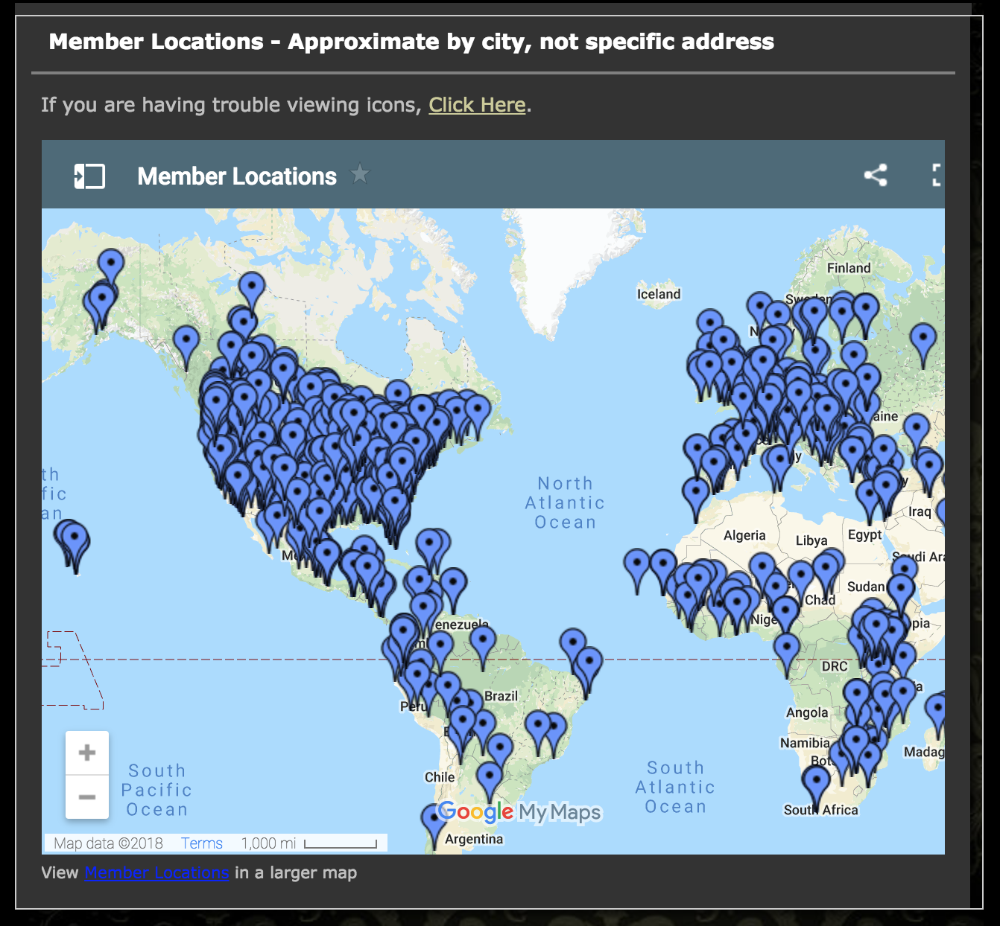
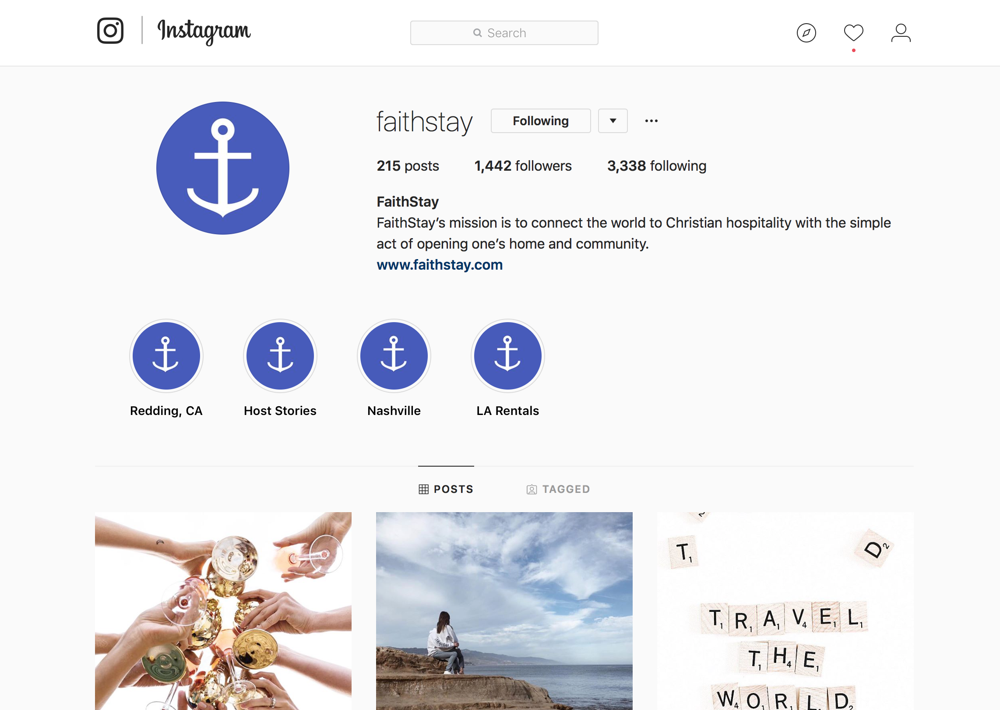
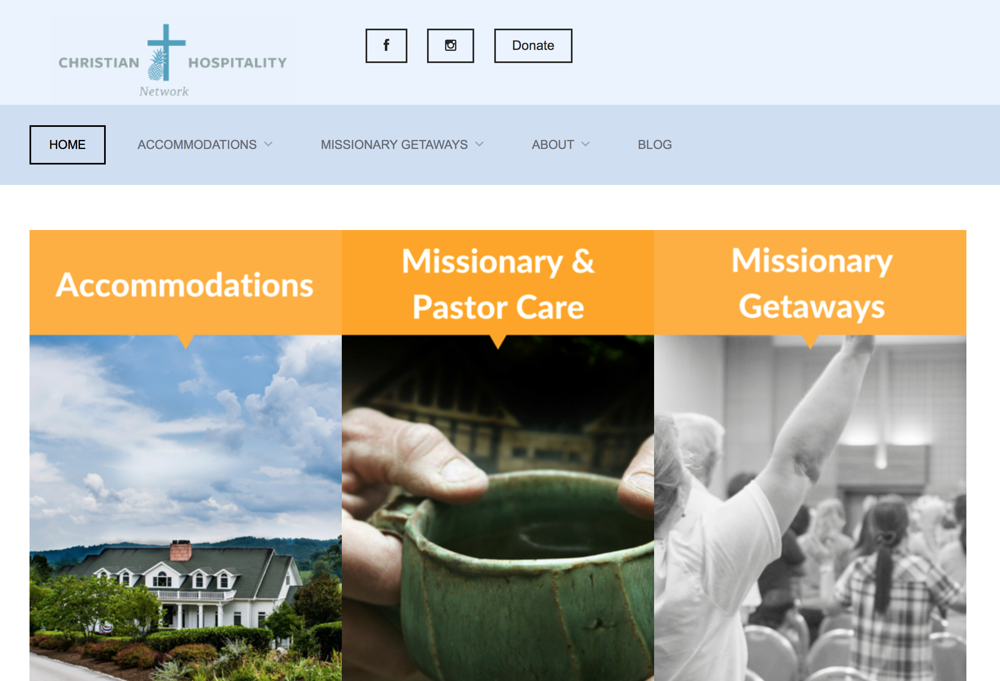
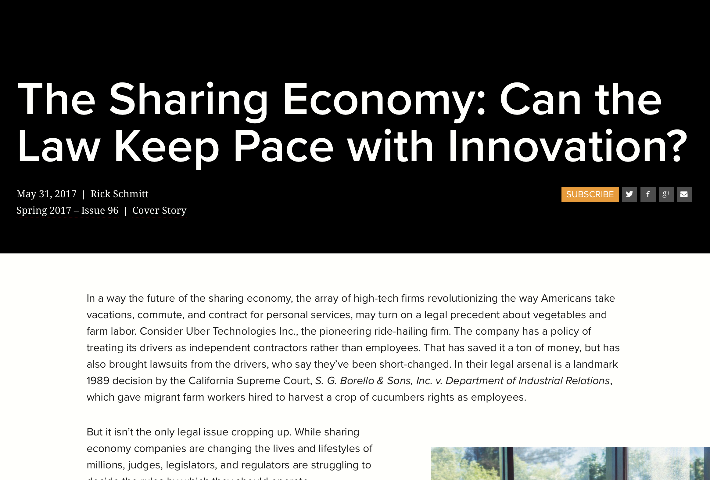
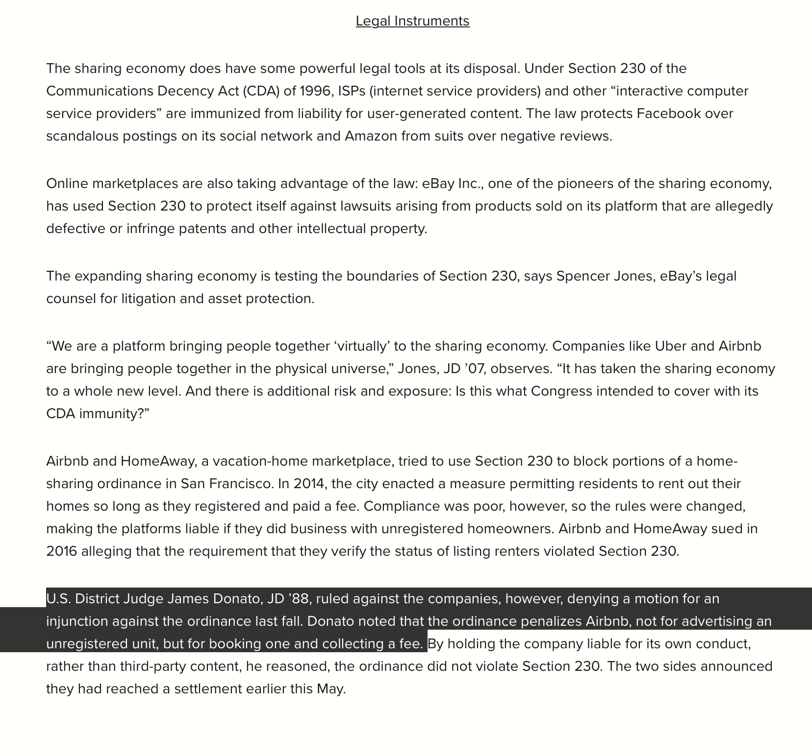

Research
I did primary research on my client, A Candle in the Window, and other secondary research on various Sharing economy news and organizations. I also interviewed my client and a target audience member.
Primary Client Research

Research from the ACW website
A Candle in the Window is a Christian Hospitality network started by Theresa Bowen that aims to connect Christian travelers to homes to support cheap family travel but most of all, promote Christian Hospitality and fellowship. To join the network, a user must pay $30 each year and can then stay at hosts homes for free and host people as they connect. Missionary’s and Pastor’s membership is free. This feature aims to help missionaries take a break and stay on budget to avoid burnout. There is lots of information on the website from extensive member stories to a map of the global locations to upcoming events that promote hospitality.About Us
This section includes 6 pages ranging from the background story of A Candle in the Window, an introduction of the Bowen Family, a purpose statement, how it works, how to help ACW grow, and Contact. The most important part of this section in designing the website was their Purpose Statement which said: "Through A Candle in the Window Hospitality Network, we hope to Glorify God by:
- 1) multiplying the blessings that we have experienced in our own home through hospitality
- 2) providing an economical alternative for travel
- 3) encouraging hospitality through our website and inspirational/educational resources
- 4) strengthening our family identity and economy, and
- 5) sharing our profits with worthy ministries that seek honor Christ and to build up the church and family"
Member Stories
There are many member stories from all over the globe. From Ohio to Guatemala to South Korea. This emphasizes ACW’s global audience. The stories also told me about the users and their demographics. Many stories were from married couples and families. There were also some stories and reviews from single adult travelers. 100% of the reviews were positive and the people all spoke very highly of their hosts and their experience with ACW.

Location
There is a map with pins for all the members of ACW Network as well as a public directory that users can search for specific locations even before they join. There is also a private directory for members to search desired locations.
Summary
From this primary client research, I learned the background and mission behind A Candle in the Window which is one of the most important aspects of Human Centered Design. I also learned about the target audience and main users of ACW through the user stories and the location map. This will help direct finding and fulfilling the user needs and Call to Action.
Secondary Research

FaithStay
For my secondary research, I wanted to look at other hospitality sites and note their successess and features.
 Faith Stay is an organization who acts like a Christian Airbnb. Users can charge however much they want, but most charge around a regular Airbnb price. FaithStay’s aim is to rent safe and loving accommodations in Christian homes. They operate almost identically to Airbnb with the search bar on the main page and the button placements. They also have photos of the homes and requirements to stay in each home. Their main pages are host, travel, give back, and trust which address most user needs beyond searching homes and logging in.The trendy photography is aimed at millennials and they have an attractive Instagram account with nearly 1500 followers.
The Christian Hospitality Network
The CHN is another site aimed more at Missionary and Pastor care.
This site shows a collection of missionary getaways and accommodations for missionaries to rest as well as conferences for them to be poured into and refreshed. The website aesthetic is simple and inviting and targeted at older missionaries and Pastors. The places listed on the CHN still cost money and are listed like Airbnb but all accommodations are owned by Christians.

Legal: The Sharing Economy
I looked into legal issues in Sharing Economy since it is a newly and vastly growing business model in the world.
New laws are just now catching up now that the results of Sharing Economy are beginning to make lasting effects. This article discusses Uber as a Sharing Economy and the problem of them treating their drivers as independent contractors instead of employees saving them a lot of money.
Questions of liability come into question in a Sharing Economy model which is important for ACW to look into as this movement grows. Also problems of refusal to host minorities, handicapped accessibility and room-sharing companies raise legal questions. Airbnb was penalized for booking an unregistered home and collecting a fee under Section 230 of the Communications Decency Act of 1996.
Summary
My Secondary Research gave me inspiration of what works from two successful Christian Hospitality Networks that are similar to ACW. Their audiences include both of ACW’s and their CTAs are notable for their services. I also learned that there are legal limitations and global discussions around the sharing economy that may affect ACW, some of which need to be outlined on the website.
Interviews
I was able to meet with the Founder of A Candle in the window as well as a possible user to gain important primary information about ACW.
Client Interview
Theresa Bowen is a mom of 5 kids and a wife of a pastor. She and her family are passionate about Christian hospitality and making their home a home to many. As a homeschool mom, Theresa is passionate about giving her kids a full education—including loving and serving God with all their heart. She started A Candle in the Window after she opened their apartment to a traveler and decided to create a network of refuges around the world.
Summary: I learned the background story of ACW from Theresa as well as the goal of the website. According to Theresa, the main goal is to attract new members and be a community-based network for users to connect with a host quickly and simply. The main problems were that the site was outdated and there was not a mobile version as many users desired.
User Interview
Erin Drago is a mom of 3 kids and a wife to the worship elder at Renewal Church. Her family enjoys traveling and she is a firm believer in opening home to people. Their family hosts life group each week and college students when they need to stay the night. Recently, they have renovated a rental home for college students close to Anderson’s campus.
Summary: From interviewing Erin, I learned what needs to be included on the website for people to feel comfortable joining. High quality photos are appreciated as well as knowing someone and hearing trustworthy user stories. Details are also very important to show in a, easily accessible place.